iOctocat
… is a GitHub app for the iPhone and iPod Touch.
It is open source and available on the App Store…
Features
Currently the application offers the following features:
- Feeds: News Feed and My Activity with event details
- Repositories: Public, Private and Watched with recent commits, issues and forks/network
- User Profile with details, repositories and following
- Search for users and repositories
- ... and counting
Some screenshots
Click the iPhone to circle through the screenshots.
- 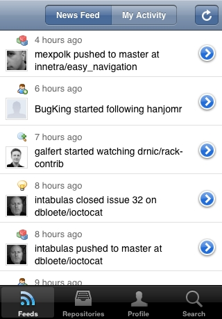
- 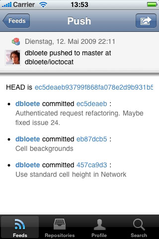
- 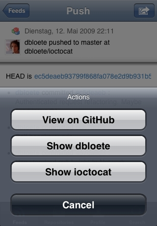
- 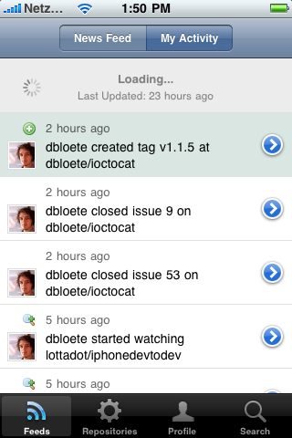
- 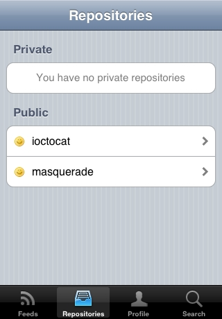
- 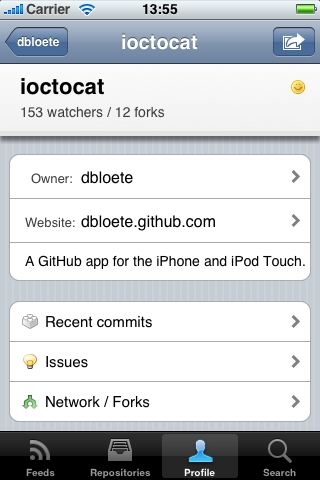
- 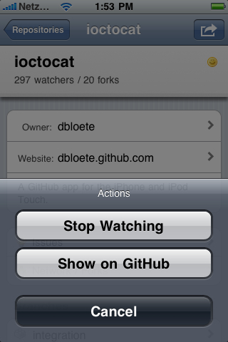
- 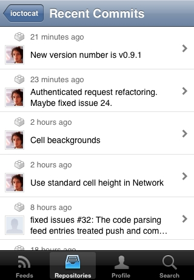
- 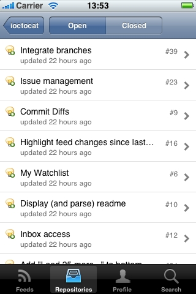
- 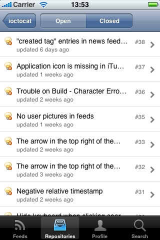
- 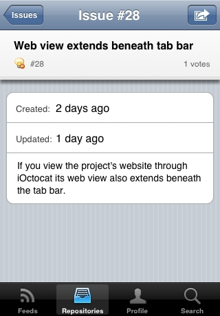
- 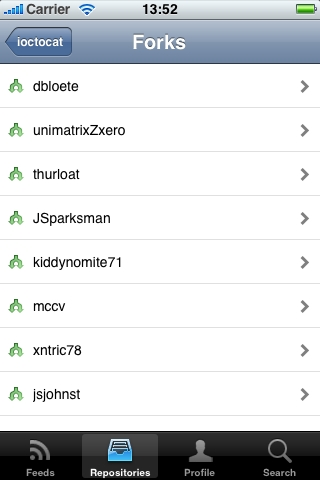
- 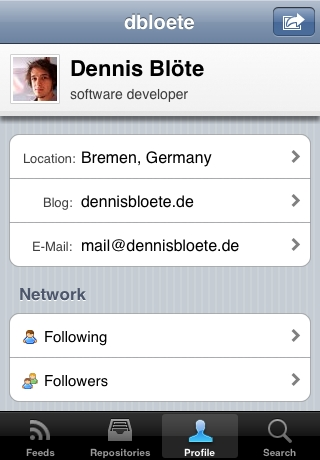

- 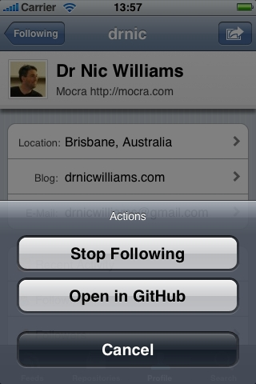
- 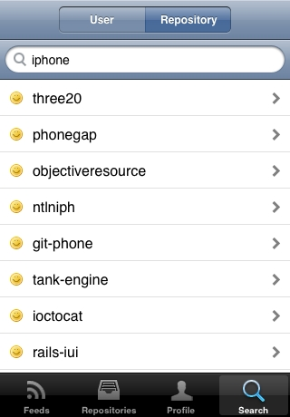
Planned features
As the GitHub API gets extended, these things are planned to be added to the feature set:
- Issue management (planned for Version 1.1)
- Commit Diffs (planned for Version 1.1)
- Repository Watchlist (currently not available via GitHub API)
- Inbox (currently not available via GitHub API)
Anything that you would like to see implemented?
Go ahead and fork the project or create a feature request.